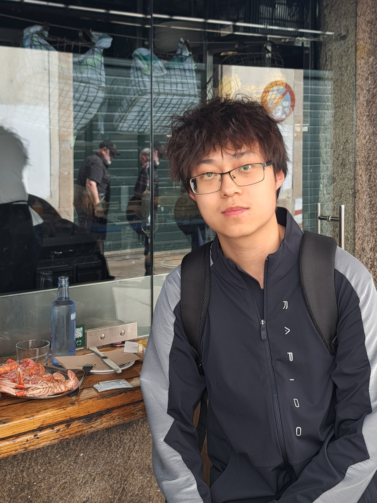

I am a PhD student at Universitat Rovira i Virgili, where I am fortunate to be supervised by Prof. Oriol Farràs Ventura.
I got my master's degree from Beijing Institute of Technology, supervised by Dr. Haibin Zhang and Dr. Sisi Duan (Tsinghua University). During this period, I spent several months as a R&D intern at Yangtze Delta Region Institute of Tsinghua University, hosted by Dr. Haibin Zhang. I received my bachelor's degree from Qinghai University, under the supervision of Prof. Yong Xie and Dr. Rujia Li (Tsinghua University).
My research interests lie in theoretical and distributed cryptography, with a particular focus on: